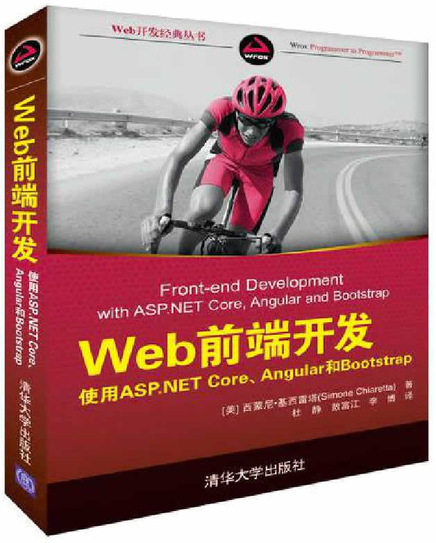

首页 > 书籍下载
《Web前端开发 使用ASP.NET Core、Angular和Bootstrap》PDF下载（高清完整版)
|  | 作者：[美]西蒙尼·基西雷塔 |
| 译：杜静、敖富江、李博 | |
| 出版时间：2018年12月01日 | |
| 出版社：清华大学出版社 | |
| ISBN：9787302515296 | |
| 总页数：290 |
这是一本介绍 ASP.NET Core 的书，本书语言通俗易懂，讲解生动，堪称良师益友。
这里提供的是《Web前端开发 使用ASP.NET Core、Angular和Bootstrap》的高清 PDF 下载，内容完整，附带目录标签。
这本书通过完美组合前端框架，来快速开发 ASP.NET Core 解决方案。这本书其实并没有特别厚重，如果你已具备基础的 Web 前端开发知识，想要进一步提升自己的开发技能，它将是你的完美伴侣。
和其它 Web 前端相关书籍对比，这本书内容可能会更深入一些，它主要介绍了以下几点：
- 关于 ASP.NET Core 的一些改进功能；
- 如何做出符合用户期望的完美型设计；
- 关于 ASP.NETCore 进行前端开发的实用和简洁性；
- 如何最大限度利用具有非源生功能的第三方库；
- 如何组合应用 ASP.NETCore 与不同的工具、框架和库；
- Bower 依赖关系、gulp 构建系统与 ASP.NETCore 的使用。
书籍目录
- 第1章 ASP.NET Core MVC的新变化
- 1.1 熟悉软件名称
- 1.2 微软.NET Web堆栈简史
- 1.3 .NET Core
- 1.4 ASP.NET Core介绍
- 1.5 ASP.NET Core的重要新特性
- 1.6 部分ASP.NET Core中间件简介
- 1.7 ASP.NET Core MVC
- 1.8 本章小结
- 第2章 前端开发者工具集
- 2.1 需要了解的其他几种语言
- 2.2 JavaScript框架
- 2.3 CSS框架
- 2.4 包管理器
- 2.5 任务运行程序
- 2.6 本章小结
- 第3章 Angular简析
- 3.1 Angular的基本概念
- 3.2 Angular的实现语言
- 3.3 建立一个Angular项目
- 3.4 Angular应用程序结构
- 3.5 数据绑定
- 3.6 指令
- 3.7 服务与依赖注入
- 3.8 多重组件
- 3.9 输入与输出属性
- 3.10 与后端程序交互
- 3.11 Angular与ASP.NET MVC的结合应用
- 3.12 Visual Studio 2017对Angular的支持
- 3.13 本章小结
- 第4章 Bootstrap入门
- 4.1 Bootstrap简介
- 4.2 Bootstrap样式
- 4.3 组件
- 4.4 JavaScript
- 4.5 使用Less定制Bootstrap
- 4.6 Visual Studio 2017和ASP.NET Core中的Bootstrap支持
- 4.7 本章小结
- 第5章 使用NuGet和Bower管理依赖关系
- 5.1 共同概念
- 5.2 NuGet
- 5.3 NPM(Node.js包管理器)
- 5.4 Bower
- 5.5 本章小结
- 第6章 使用gulp和webpack构建应用程序
- 6.1 前端构建系统的作用
- 6.2 gulp深度介绍
- 6.3 webpack介绍
- 6.4 Visual Studio和构建系统
- 6.5 本章小结
- 第7章 部署ASP.NET Core
- 7.1 ASP.NET Core的新托管模型
- 7.2 在自有IIS环境上的安装
- 7.3 在Azure上部署
- 7.4 部署到Docker容器
- 7.5 本章小结
- 第8章 非Windows环境中的开发
- 8.1 在macOS上安装.NET Core
- 8.2 在macOS上构建第一个ASP.NET Core应用程序
- 8.3 Visual Studio Code
- 8.4 使用命令行工具
- 8.5 本章小结
- 第9章 综合运用
- 9.1 构建一个铁人三项赛成绩网站
- 9.2 构建后台网站
- 9.3 构建注册页面
- 9.4 展示实时成绩
- 9.5 使用物联网设备连接
- 9.6 部署
- 9.7 本章小结
书籍下载
一键登录，免费下载完整版 PDF，文件名称：《Web前端开发 使用ASP.NET Core、Angular和Bootstrap》.pdf